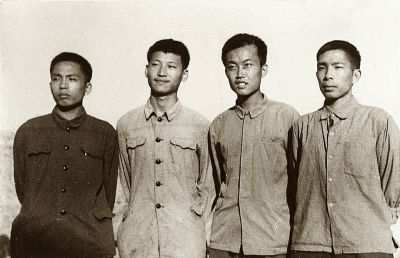
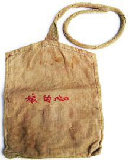

读《习近平的七年知青岁月》，得知当年十五岁的习近平下乡到陕北梁家河时，其他知青的行李里大多都是衣服，而他的两个箱子装满了书。他当时是“黑帮子弟”，读书对他的未来有多大帮助，他在当时并不知道，然而在那样的情况下他却带去了那么多书。可见读书对他来说，是一种骨子里的喜欢，并没有太多的功利目的。在人生最迷茫无助的时候，他选择了读书。

农村的生活，当然和城里的生活落差很大。他也有过迷茫，但很快就面对现实，并融入生活。但他不是屈服于现实艰难的生活，而是寻求改变。修淤地坝，打井，修路，建代销点等等。承认了现实之后，并不屈服，而是努力改变。当进入一个并非他理想的环境中时，他的选择先是接受，然后改变；当其他知青都离开的时候，他选择的是不急不躁，顺其自然。
被推荐上大学，又是最后一个离开，一般人会选择最容易的那一个，而他的所有志愿只填写了一个学校，这就是清华大学。可见他的志向和自信，要么就是清华，要么继续留在农村当知青。在选择填报志愿的时候，他选择了一个难度最大的，而不是选择最容易的。
清华大学毕业，他在中央军委给国防部长耿飚当秘书，继续下去，以后在部队任职也顺理成章。然而三年后，他却选择了去河北正定县任县委副书记……而后福州，福建，浙江，上海一步步直到党的总书记，国家主席。
就任党的总书记，面临的是党内、军队内严重的腐败，中国改革又到了深水区，遇到了最难啃的骨头。然而，他不畏惧，不退缩，打虎拍蝇，掀起反腐风暴，无论是党内，还是军内，凡涉及腐败一概毫不客气。从严治党，从严治军，依法治国，政治、经济、军事、文化、科技、国防几乎所有领域都在短短五年内风气为之一新，国家实力，国际地位，国民自信，中华文化影响空前增大，中华民族迅速接近到了世界舞台的中心……
他从最基层干起，也最熟悉底层生活，言谈举止更是接地气。从当年十五岁下乡时的选择，到最后成为党和国家最高领导人以后的决定，人生每一个阶段的选择，都彰显出了他非凡的境界与格局。
他提出中国梦，更提出“打造人类命运共同体”，他在用自己的行动努力践行中华文化“世界大同”的思想。是他直言不讳地说“中国这头狮子醒了！”是他义正辞严地说“绝不允许任何人把任何一块中国领土从中国分裂出去。”也是他说“中国人民不信邪也不怕邪，不惹事也不怕事，任何外国不要指望我们会拿自己的核心利益做交易，不要指望我们会吞下损害我国主权、安全、发展利益的苦果。”是他明明白白、毫不含糊地提出了“四个自信”，是他隆重地纪念中国工农红军长征胜利，设立国家公祭日、设立烈士纪念日、召开全国文艺工作者座谈会，提出社会主义核心价值观，用正能量感染、影响人……感觉，是他在用这些行动唤回了中国人的魂，中国军队的魂，中国共产党的魂。对于一个有着14亿人，56个民族，8900多万共产党员的大国来说，没有超凡的魄力和能力，没有清晰的治国理政思路，要在很短的时间里面，做到如此，并不容易。然而，他做到了！这是国之福，民之福，党之幸。（王永杰）
本文系作者授权百度百家发表，未经许可，不得转载。